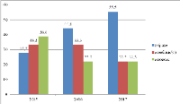

Цей проєкт являє собою Telegram-бота, створеного для автоматизації щоденних задач студентів.
Основна ідея полягала в тому, щоб спростити доступ до розкладу занять, важливих оголошень та навчальних дедлайнів.
Бот дозволяє користувачам швидко отримати інформацію про свій навчальний день, обравши групу
або курс. Крім цього, реалізовано систему нагадувань, яка допомагає студентам не пропускати важливі
події. Особливу увагу приділено зручності інтерфейсу та швидкості роботи.
У процесі розробки було використано Telegram API, що дозволило реалізувати інтерактивне меню та
гнучку систему команд.
Портфоліо нашого студента
Про мене
Я студент технічного університету, який активно розвивається у сфері інформаційних технологій та
інженерії. Маю досвід у створенні навчальних і власних проєктів, що дозволило мені сформувати
практичні навички програмування, аналітичного мислення та роботи з сучасними технологіями.
Відповідально ставлюсь до виконання завдань, швидко навчаюся та прагну постійного професійного
розвитку. Відкритий до нових можливостей, командної роботи та складних викликів.
Проекти

Даний проєкт — це веб-додаток для аналізу успішності студентів, який дозволяє візуалізувати
навчальні результати у вигляді графіків та діаграм.
Система збирає дані про оцінки та формує аналітичні звіти, що допомагають визначити сильніn та
слабкі сторони студента. Користувач має можливість переглядати динаміку змін успішності,
порівнювати результати між різними періодами та отримувати прогноз майбутніх оцінок.
Інтерфейс побудований таким чином, щоб навіть складні дані сприймалися легко та інтуїтивно.
Даний проєкт реалізує систему автентифікації користувача за допомогою розпізнавання обличчя.
Система використовує комп’ютерний зір для ідентифікації користувача та забезпечує безпечний
доступ до системи без необхідності введення пароля. Це підвищує рівень безпеки та зручності
використання.